搭建一个简单的ssh框架
大家好，我是mythSun。
很高兴能在这里和大家分享，怎么来搭建一个简单的ssh框架。
话不多说，直接开始。
创建 Dynamic Web project 项目（file—new--Dynamic Web project）。
输入项目名称，直接finish。
第二步：为导jar包做准备
找到WebContent下的WEB-INF（重点是找到WEB-INF），然后再往下找WEB-INF的lib（没有自己新建即可）
第三步：导入支持ssh的jar包们（jar包们下载链接：xxxxxxxxxxxxx）
附图jar包们：
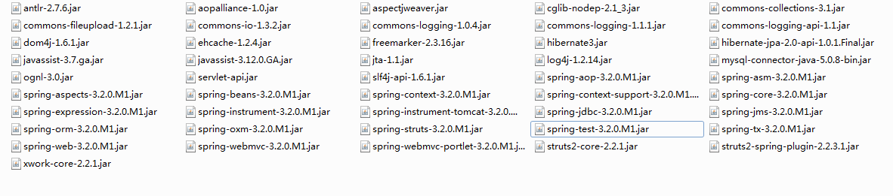 将这一堆jar直接复制进lib文件夹下。
当复制的jar文件左下角出现这个
 代表导入成功
代表导入成功第四步：写web.xml文件
1、这个文件写在WEB-INF下，和lib文件夹同级
2、web.xml内部代码
 正确完成示意图：
正确完成示意图：
第五步：写applicationContext.xml文件
话不多说，直接上代码，再介绍需要改什么东西
 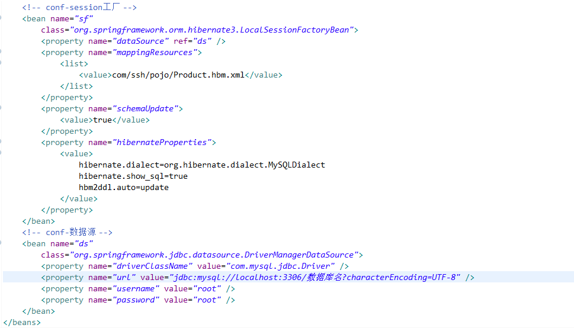
需要重点介绍的地方
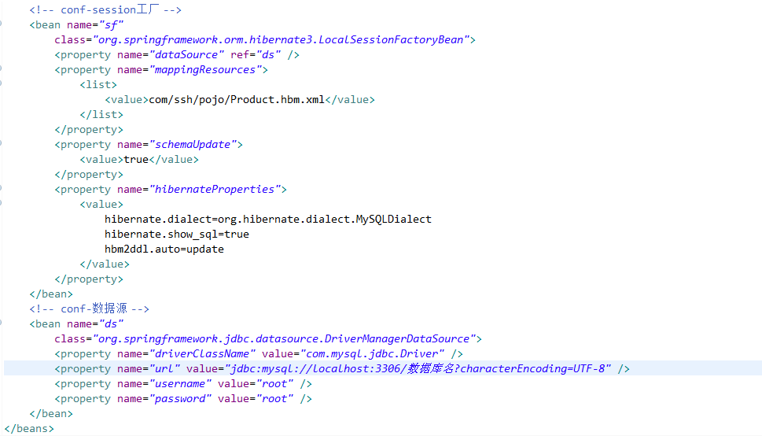
需要重点介绍的地方 这一堆，必须有
这一堆，必须有 1、当你使用数据库工厂bean时，直接用sf就行，这里不懂没关系，后面有演示怎么用sf
1、当你使用数据库工厂bean时，直接用sf就行，这里不懂没关系，后面有演示怎么用sf2、
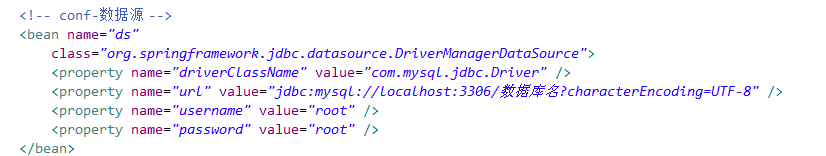 1、property name="url" value="jdbc:mysql://localhost:3306/数据库名?characterEncoding=UTF-8"这个里面的数据库名换成的你的数据库名
2、property name="username" value="root" property name="password" value="root" 这个换成你自己的数据库用户名密码（我的是mysql数据库）
第六步：为项目分包
找到src，在底下建立这四个包
 分别对应放action类、放dao类、放实体类、放业务类
分别对应放action类、放dao类、放实体类、放业务类第七步：写三个jsp
1、在WebContent写，分别叫index.jsp和success.jsp、failed.jsp，如图
上index.jsp代码，直接写在body里即可，就是个简单的表单登录
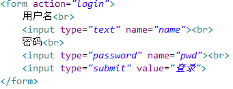 上success.jsp，直接写在body里即可，就是个简单的告诉你登陆成功

上failed.jsp，直接写在body里即可，就是个简单的告诉你登陆失败
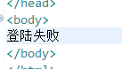
第八步：写实体类
首先我们数据库中有一个login表，表里三个字段，分别是id（int类型）、name（varchar类型）、pwd（varchar类型），为其插入数据1,1,1。
（可以用navcat可视化工具迅速搭建学习环境，请看我的另一博文“navcat创建数据库和表”）
1、找到我们的com.test.entity这个包，新建类Login.java，如图
 Login.java内部代码。对应表里字段，新建三个对应的变量并生成set/get方法，上代码
Login.java内部代码。对应表里字段，新建三个对应的变量并生成set/get方法，上代码 2、写Login.hbm.xml文件（这就是个xml文件）
2、写Login.hbm.xml文件（这就是个xml文件）直接上代码：
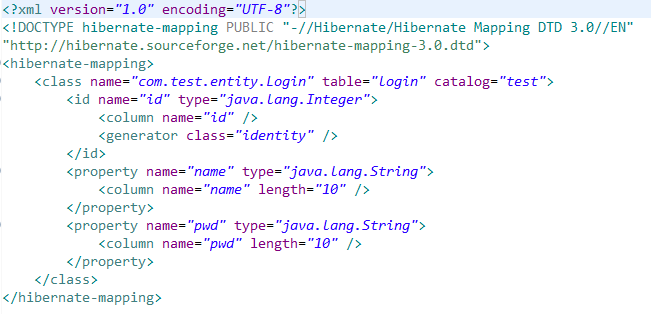 开始解释代码：
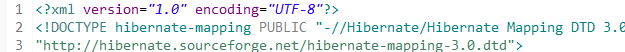 这个必须有
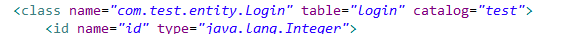 第一行依次代表你这个xml对应的实体类，数据库里对应的表名，数据库名
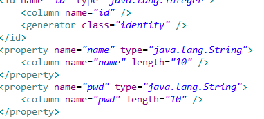 对应了你的id、name、pwd
第八步：修改application配置文件
我要改成我的数据库
还记得这里吗
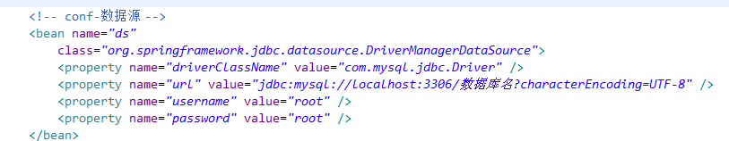 不认真听讲的回去看“第五步”
这里我要改成我的数据库，就是把property name="url" value="jdbc:mysql://localhost:3306/数据库名?characterEncoding=UTF-8" 这行代码里的数据库换成我的
也就是改为
property name="url" value="jdbc:mysql://localhost:3306/test?characterEncoding=UTF-8"
然后还要改这里
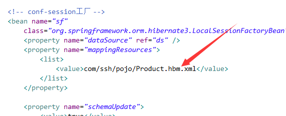 com/ssh/pojo/Product.hbm.xml改为
com/test/Login.hbm.xml对应我刚刚写的Login.hbm.xml文件
第九步：写dao类
这里我要在com.test.dao下写一个接口，一个接口实现类，如图
 接口类：LoginDao.java。接口实现类LoginDaoImpl.java。为什么用接口？接口是什么？ 请参看我的另一篇博客“为什么使用接口”
接口类：LoginDao.java。接口实现类LoginDaoImpl.java。为什么用接口？接口是什么？ 请参看我的另一篇博客“为什么使用接口”接口类LoginDao.java代码
 接口实现类代码
接口实现类代码 注意list=find("from Login a where a.name=?",name);里Login大写，代表的是Login对象，这就是Hibernate框架的好处，用操作对象方式操作数据库
注意list=find("from Login a where a.name=?",name);里Login大写，代表的是Login对象，这就是Hibernate框架的好处，用操作对象方式操作数据库第十步：写业务逻辑
在com.test.service包下我新建一个接口类，一个接口实现类，如图：
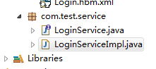 接口类LoginService.java，接口实现类LoginServiceImpl.java
直接上代码：
LoginService.java的代码：
 LoginServiceImpl.java代码：
LoginServiceImpl.java代码：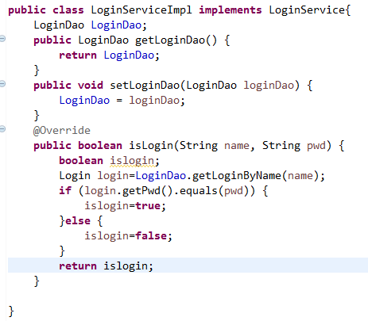 第十一步：写action类
在com.test.action里新建LoginAction类，代码
 第十二步：修改application.xml文件
第十二步：修改application.xml文件直接在sf这个bean前面添加
 这里就是前面提到的怎么用sf这个bean，忘了的看第四步。
这里就是前面提到的怎么用sf这个bean，忘了的看第四步。第十三步：写struts.xml文件
这个文件写在src里面，如图
 直接上代码：
直接上代码：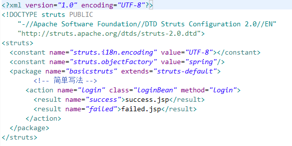 第十三步：测试运行
右键项目—run as—run on service—选择自己的tomcat运行，没有tomcat配置的，参考我的另一篇博文“在eclipse中配置tomcat”
运行成功！